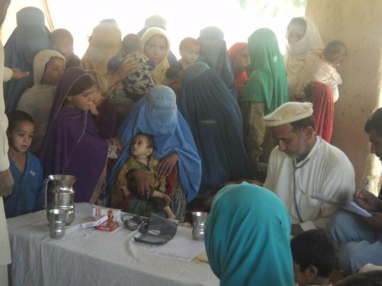
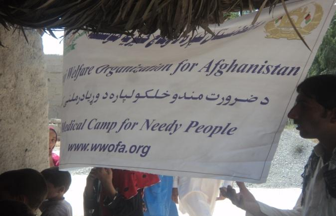
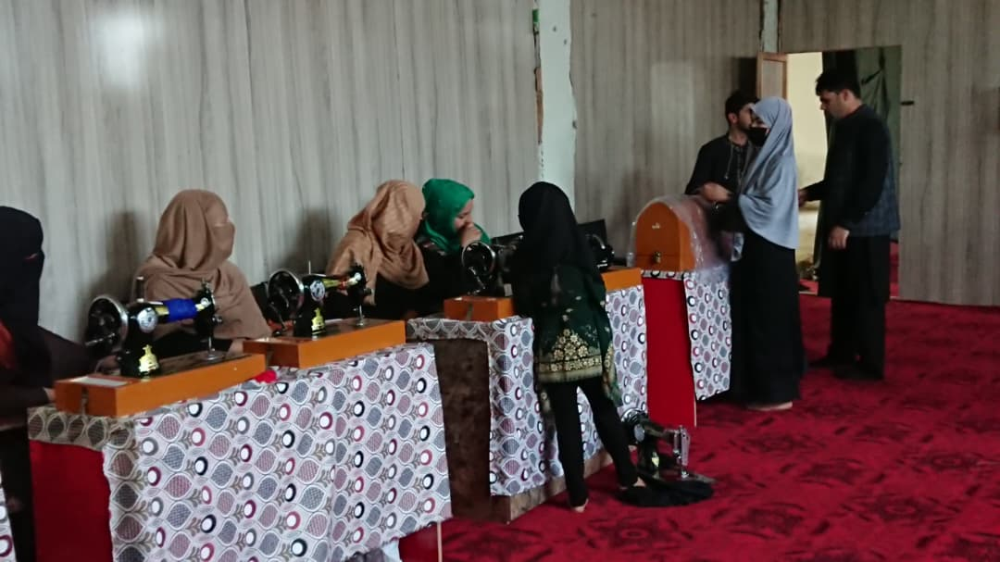
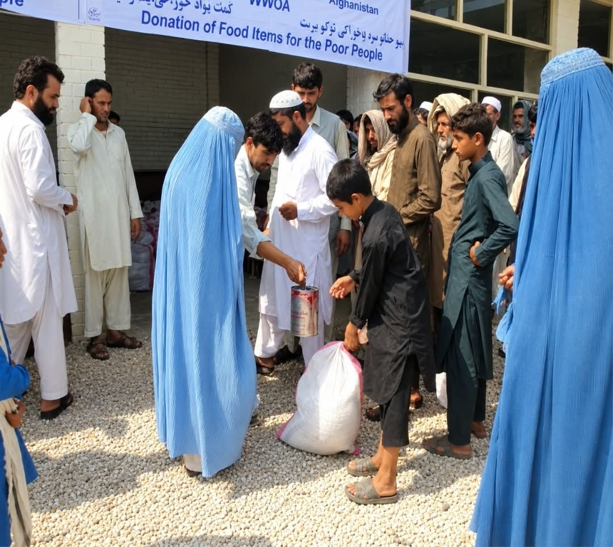
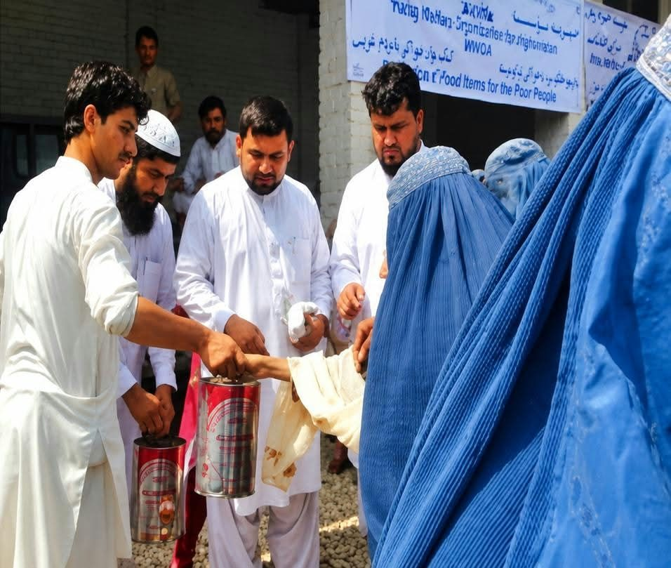
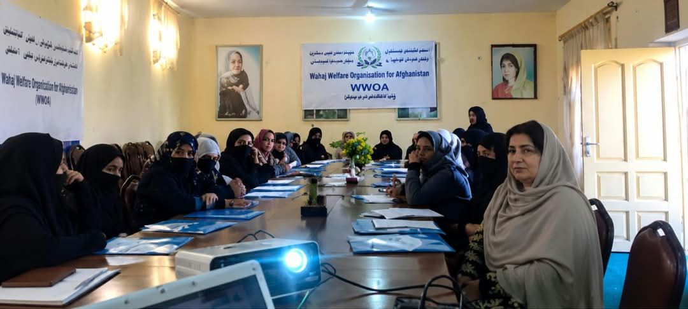
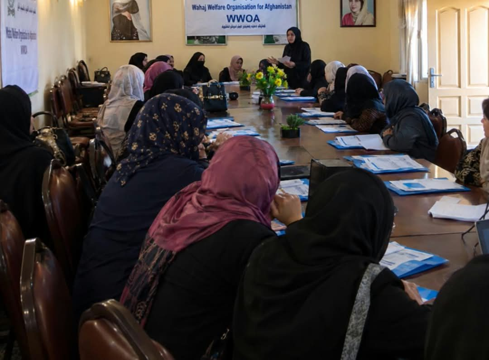
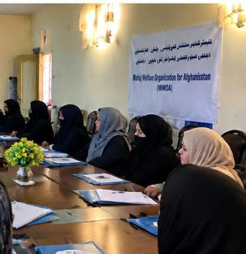

A look at the programs WWOA has delivered on the ground — in healthcare, humanitarian aid, vocational training, women's rights, and psychosocial support.
Conducted September 8, 2014


Ahead of the camp, WWOA conducted an assessment survey (August 30, 2014) in the Upper–Mirzakhail displaced settlement, identifying 200–250 displaced people — mostly from Kunar province — living among a host population of 1,200–1,400. The survey found widespread seasonal illness, limited access to clean water and sanitation, and a lack of medical care.
In response, WWOA partnered with the district's public health department, local administration, and community elders to deliver a free medical camp — providing checkups, treatment, and medicine entirely free of charge, alongside on-the-spot hygiene education.
Common conditions treated included diarrhea, pneumonia, chest infections, coughs, sore throat, body aches, and bacterial skin infections. All 258 attendees also took part in hygiene education sessions. The camp was approved and led by Engineer Imam Jan Stanikzai, CEO & President of WWOA, with a team of doctors, a pharmacist, hygiene educators, and logistics support drawn from both WWOA staff and the public health department.

WWOA provided a three-month vocational sewing training program for 10 women in Afshar, designed to build practical, income-generating skills.
Over the course of the program, participants learned sewing and tailoring techniques that enabled them to earn an income and better support themselves and their families — turning a short-term training into a lasting, practical skill.


WWOA provided three mental health and wellbeing sessions for women who had stopped going to work — designed to strengthen participants' confidence and self-esteem, and to promote positive coping strategies.
The sessions were held in three groups: two with 10 participants each, and a third with 27 participants, reaching 47 women in total.
June 17 – July 2, 2015 · Funded by WWOA & Noor Global Co. Ltd


Years of conflict in Afghanistan have caused widespread destruction, poverty, and displacement. Fighting in Nangarhar Province forced many families to leave their homes, and many displaced families in Surkh Rod District faced hunger, malnutrition, poverty, and a lack of work.
After an assessment survey identified an urgent need for food assistance, WWOA — with financial support from Noor Global Co. Ltd — distributed food to more than 350 vulnerable families during the holy month of Ramadan. Each family received flour, cooking oil, sugar, beans, dates, and salt.
Residents of Surkh Rod thanked WWOA for the assistance, and representatives of the Directorate of Economy and the Governor's Office also praised the initiative. After the project, the Nangarhar Governor's Office issued a letter of appreciation to WWOA.
February 24, 2016 · Funded by WWOA



Women in Nangarhar have a great need for awareness and capacity building on women's issues. At the official request of the Nangarhar Director of Women Affairs, WWOA organized a one-day training on women's rights for teachers.
The training took place in the training hall of the Directorate of Women Affairs, with 32 female participants. WWOA's Deputy Director welcomed the guests, and Director of Women Affairs Aneesa Imran thanked WWOA for organizing the program. Representatives of the Governor's Office, ACBAR, and the Directorate of Economy attended as observers.
The workshop used lectures, discussions, and role play, with all materials translated and presented in the local language, and full handouts given to every participant. At the end, participants made recommendations and evaluated the workshop and its training tools.
These are the first documented chapters of WWOA's work — and with your support, there will be many more.